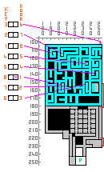

Brannington
The gate from Exkordon leading to Brannington will only let you pass if you are an Arch
| Key | To ↓ Forest | ||||||||||||||||||
|
■ |
Teleport |
■ |
Depot |
■ |
Guard |
■ |
Mausoleum Safe Path |
■ |
|||||||||||
|
■ |
Stairway |
■ |
Red Key Piece |
■ |
Green Key Piece |
■ |
Treasure (5) |
■ |
|||||||||||
|
■ |
Blue Sq |
■ |
Walls / Fences |
■ |
Blue Key Piece |
■ |
Centinel |
■ |
|||||||||||
CHANGES 5/26/04
New Pents Pit with entrances to Ice Underground and FP 55-62, 63-70 also IP 71-78, 79-86, 87-94, 95-102 and Hell Pents 103-118
Entrance to RD's
Entrance to Mines
Governors Office ( In Count's Mansion )
Advisors (3)
Tower Quest
The town of Brannington and it's surrounds are all on one 255 x 255 map. Areas reached by ■ Stairways/Ladders are plotted in the top left corner, these include the upstairs Bar, the downstairs Bar & Arena, the Count's family quarters, the sewers, mausoleum and the small caves holding the pieces of the three keys. Cave entrances are 4 tile squares in the stony patches, Wolves, Bears and other creatures here are Lvl 50+ Exercise caution. The entrance from Exkordon is limited to Arch, The guard at the entrance will direct you to the Counts Residence, he has need of your services.
The Counts Quest: (And Part One Brenneth Lost Memory Quest)
It seems that Thief Mages have stolen three precious Family Heirloom jewels from the Brannington Family. The Mage Thieves live in 3 buildings guarded by Golems on the Western half of the map. You need Keys however, and each key is broken into 3 parts, kept by a Grolm in hidden caves. Each cave entrance, 4 tiles in size, color coded by the key part it contains on the map, are in stony areas in the grass. Walk over, fall in (you can lure bears and wolves to fall in too) kill Grolm, get Key Part. (One of them will have a strangely marked dagger which you should keep for Brenneth) Go to same color door mage home and kill golems inside, look for hidden fake wall, kill Mage and loot treasure chests for lost jewels, one chest will contain a strange potion, keep it for later. Each jewel gets a reward from the count, in gold plus a Key, also wife will give you gold and daughter a lollipop (Ishtar Special) as reward also..... Then it's on to the Mausoleum quest
Mausoleum Quest: ( + Part 2 Brenneth Lost Memory Quest and Shroom Run)
Go out the back door of the Count's house and down the stairway in the Garden. In the first level you will see to the SE, sewers with Ratlings Lvl 52 and tough, in the shaded rooms are, Shrooms (H,I) 4 of each. To the NE is another stairway down to a room where you will meet an Ancestral Spirit who will tell you of the evil works of the Necromancer. Use your keys to go deeper into the Mausoleum, killing Zombies as you go. In the boulder room (safe Path ■ on Map) a miss step will plunge you into a cave with 3 grolms. Kill the Necromancer, get the amulet and book and give amulet to ancestral spirit You can now go back to the Bar and talk to Brenneth, give him Dagger, Book & Potion and make him happy too.
The Forester's Quest:
The Forester, who you find in the upstairs Bar, offers to translate for you maps to hidden treasure that the thief Mages have given to the golems. There are 5 treasure maps in all, when you find the golem with the map ( near Fire in bottom left corner of map ) kill him 5 times and get 5 copies. Go to the bar and give one to Forester, follow clue get treasure (1400 - 2000 g) go back to Forester, give him another map for next clue etc, repeat till you have all 5 gold hoards. You have to have the clue before you can dig one up, and you have to dig up clue you have before you can get the next clue. Do not try to give Forester all the maps at once he will simply repeat the same clue over and over.
Treasure Locations are :-
Dead Tree 83,127, Heart of Fire 94,222, Next to Empty Bucket 214,136,
In stone circle 185,22, Next to Bags 165,79
The Miners Quest:

He has had his favorite Pickaxe stolen by thieves. He is convinced one of the shopkeepers is in league with them, and he is right. Robbers entrance ■ is in back of Riel's shop on Right in NW section of town. Fight your way through lots of Robbers (they have a strong war cry) and recover the Pickaxe. Check all shelves and tables in room, they all have some treasure!! Return to the bar and give the Pickaxe to the miner, who will then give you a key to the flooded sewer area and ask you to kill the robber leader ■.
In the sewer area there are 8 ladders ■ leading up to small rooms each of which has a locked door. The robber guarding the door has a key, but not to the door of the room he is in. You can see which key and door are in each room on map. The room with the x in it has key in chest for door to Robber Boss Lair.
When you have done this return to the miner and he will offer to trade 5000 SU for 1000GU or 1000 GU for 4000 SU a nice inexhaustible supply of GU.
While you are at the bar have a drink... you deserve it.
The Tower Quest:
The Hermit introduces the quest, Centinel guards are level 60
T1 has fake walls behind which there are 4 chests each containing a key
T2 You have to mine a path, Keys allow entrance & passage through, layout is RANDOM .
T3 You need to solve the sliding pillars puzzle to open the 2 locked doors
T4 Teleporters and Centinels, find the right sequence to cross the room
T5 Across, thru fake wall and L key 5, across & R key needed to get key 6 for center door
T6 There are a bunch of Centinels... kill em all. You will be teleported to next level
T7 You enter at bottom R corner. Stay on green tiles, take L side path. NPC at end will teleport you to library level 8
T8 You enter at green dot, Fight your way to Grimore of Animation (Red Dot), read it, you will be teleported back to NPC on level 7, speak to her and she will teleport you out to tower entrance